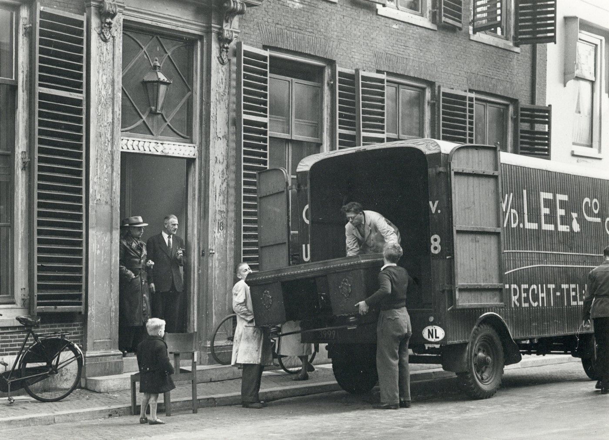
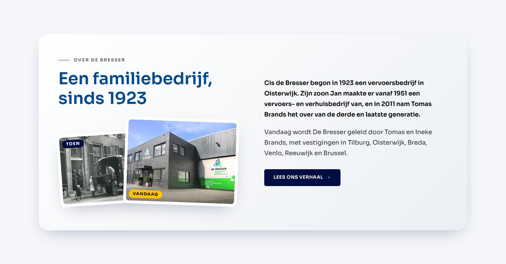
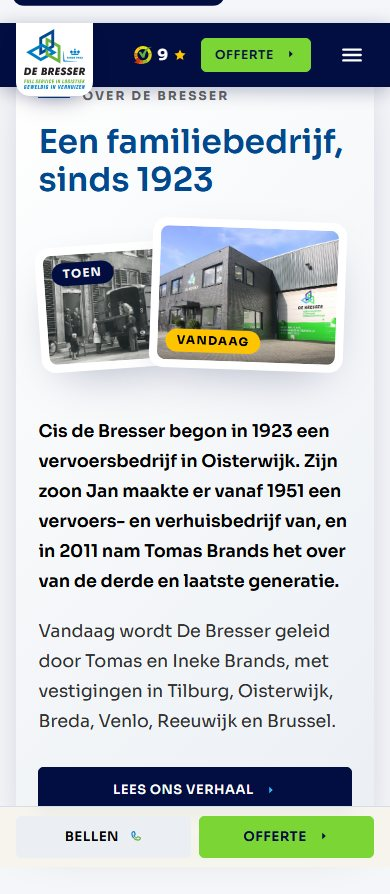

Optie 4
Verhuizers tillen een kast in de wagen, Utrecht 1945–1955
Verhuizers van C.A. van der Lee & Co tillen een groot eikenhouten meubel in de verhuiswagen aan de Minrebroederstraat in Utrecht, 1945–1955. Geen foto van De Bresser.
Utrecht, Minrebroederstraat, 1945–1955 · L.H. (Henk) Hofland (Het Utrechts Archief, 501727) · licentie: CC BY 4.0 · bron · 5980 × 4325 px
Naamsvermelding op de site: Foto: L.H. Hofland / Het Utrechts Archief, CC BY 4.0
De foto

In de sectie op de homepage, 1440 breed (751 px hoog, past in 822)

Op de telefoon, 390 breed

Niets aangeklikt = valt af
Je keuze
Kopieer dit blok en plak het in de chat.